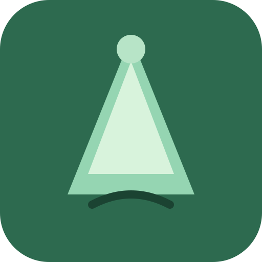

Aucune randonnée ne correspond à votre recherche.

Randonnées à pied
Aucune randonnée ne correspond à votre recherche.
Randos Lorraine est une application web installable (PWA) pour découvrir des randonnées en Lorraine.
Fonctionne hors ligne après la première visite.